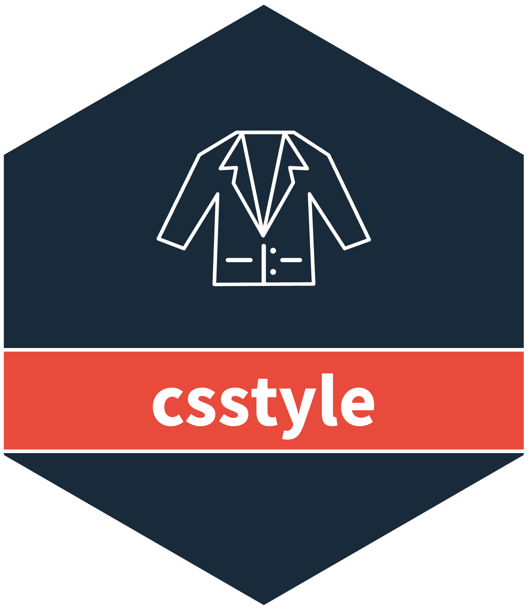

csstyle 
Overview
csstyle is a comprehensive styling system for consistent visual outputs using CSIDS guidelines. It provides ggplot2 themes, color palettes, and dual formatting functions to standardize graphs, tables, and reports.
Key Features:
- ggplot2 themes with CSIDS styling and configurable options
- Color palettes with hierarchical system (primary, warning, posneg)
-
Dual formatting system:
- Norwegian formatting for domestic reports (comma decimal, space thousands, “IK” for missing)
- Journal formatting for academic publications (decimal point, comma thousands, “NA” for missing)
- Number formatting for percentages, per-100k rates, and log transformations
- Date formatting with Norwegian conventions vs ISO 8601 standards
The package focuses on consistency over flexibility to ensure reproducible, professional outputs across different research contexts.
Run help(package="csstyle") for more information.